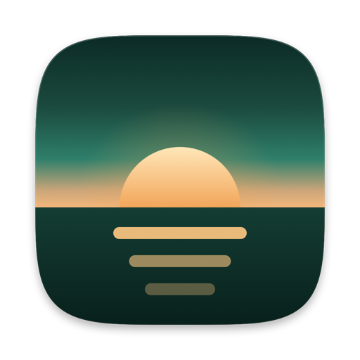
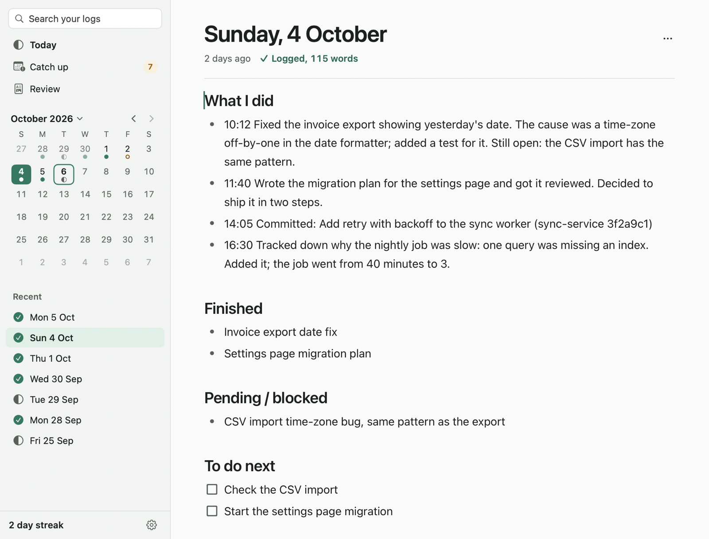
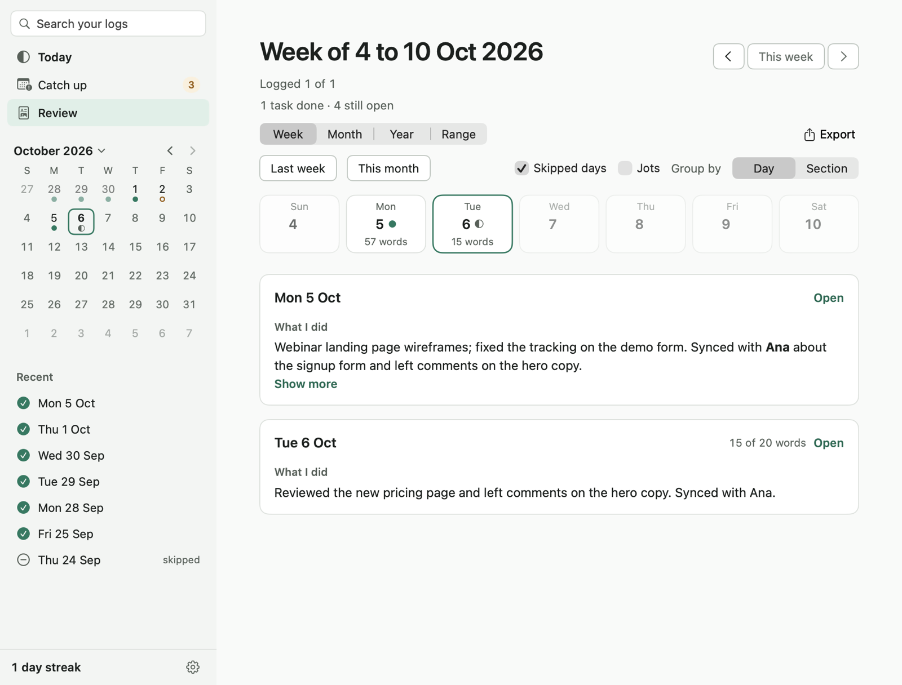

Gloamlog
A work journal for your Mac that can write itself from Claude Code and Git, while everything stays on your Mac.
curl -fsSL https://raw.githubusercontent.com/dasariprashant0/gloamlog/main/install.sh | bashThe script downloads the latest GitHub release, verifies the published SHA-256, installs to /Applications and removes the quarantine flag from that app only. Prefer to read it first? Or get Gloamlog.zip from the latest release, unzip it, and drag Gloamlog.app to /Applications. Homebrew: brew install --cask --no-quarantine dasariprashant0/gloamlog/gloamlog.
Alpha (v0.6.6). Mac only: macOS 13 or later, Apple silicon and Intel. Open source under the MIT licence. Not notarised, so the first launch of a browser-downloaded copy needs an extra approval; the install guide explains what that means. Several newer features have had little use on real Macs, so expect rough edges and please report them.

See it in 95 seconds
Captions are part of the picture. The video is served from this project’s GitHub release and loads only when you press play.
Why Gloamlog
The end-of-day note is the one nobody writes.
Standups, weekly updates, performance reviews and “what was I doing on Friday?” all need it. Gloamlog makes it one quiet page a day, with a reminder, a catch-up list for days you missed, and a streak that forgives backfilled days.
Your notes are just files.
One markdown file per day in a folder you choose. No database, no account, no export step. Open them in any editor, sync them with iCloud Drive or Dropbox, keep them in git.
The log can write itself, locally.
Connect Claude Code and it adds a short “what I solved, what I did, what’s open” entry to today’s page when a piece of work is done. Turn on Git and your commits and pull requests show up too. Nothing is uploaded anywhere by Gloamlog.
Let Claude write your log
Settings > Sources > Connect Claude Code sets up a small helper so that Claude Code can add a short entry to today’s page when a meaningful piece of work is finished: the problem it was solving, what it did, what is still open.
The helper is one Python file using only the standard library (it needs python3, which the Command Line Tools provide). It has one tool, log_work, which writes a small JSON file to ~/Library/Application Support/Gloamlog/inbox. Gloamlog picks it up (while it is running, about every 15 seconds, or at launch) and adds it to today’s page. The helper makes no network requests. Claude writes the sentence, so read what it adds and edit it like any other line.
To undo it, click Disconnect in Settings > Sources.
Git and commits. Also in Sources, and off by default: turn on Claude Code or Git reading and Gloamlog can list what you worked on from your Claude Code session files and git log, for the projects you tick. “Add commits for me” writes today’s commits and pull requests into your page as you work.
What the button changes, after showing you a confirmation that lists it:
- Registers the helper with Claude Code for all your projects. This is the same as running
claude mcp add --scope user gloamlog -- python3 <path to the helper in the app>. - Adds a short section to
~/.claude/CLAUDE.md, between<!-- gloamlog:begin -->and<!-- gloamlog:end -->, that tells Claude when to write an entry. If your file already mentionslog_work, it is left alone. - Sets “Jots go under” to “What I did” if it still has its default, so entries sit with the rest of your day.
What it does
- A page per day
- Headings, bullets, to-dos, quotes, code, tables, links and images; type / for the block menu. It autosaves and keeps versioned safety copies you can restore. New days can start from a template of headings you control. A day counts as “logged” once you write enough words (you set the number).
- Any date, and catch-up
- A month calendar opens any day. ⇧⌘T jumps by typing
last fri,2 octor-3. Catch Up lists the workdays you missed and walks you through them; you can skip holidays or leave in bulk, with undo. - Quick capture
- Press ⌃⌥J in any app, type a line, press Return. It lands as a time-stamped bullet on today’s page, even if that page is open. A write-ahead journal means a note is not lost if the app is closed or crashes.
- Reviews and export
- Review a week, month, year or any date range. Copy it as Markdown, plain text or rich text, save it as PDF, or export Markdown with only the images you used.
- Reminders
- A strict or gentle end-of-day reminder with snooze, delivered as system notifications.
- Folder sync
- Point the log folder at iCloud Drive or Dropbox and use two Macs. Gloamlog watches the folder, does not treat a not-yet-downloaded day as empty, and resolves “conflicted copy” files with Keep mine, Take theirs or Keep both. It does not delete either copy.

- No account, no analytics, no telemetry, no crash reporting.
- The one network request the app can make is Check for Updates…, and only when you click it: it asks
api.github.comfor the latest release and, if you accept, downloads the zip and its checksum fromgithub.com. Nothing about you is sent. - The page editor is bundled in the app and runs under a Content-Security-Policy that blocks network access.
- Reading Claude Code sessions and Git is off until you turn it on, is read-only, redacts secrets, and stores nothing from what it reads.
- Your notes are
~/Gloamlog/YYYY-MM-DD.md, one file per day, in a folder you can change in Settings > Storage. Safety copies, the quick-capture journal and the Claude inbox live in~/Library/Application Support/Gloamlog/, outside your notes folder so they never sync with it.